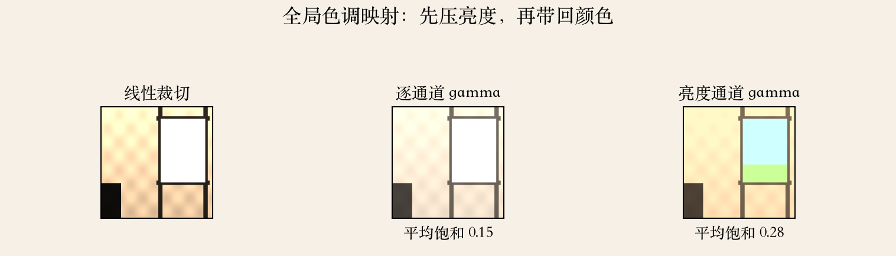
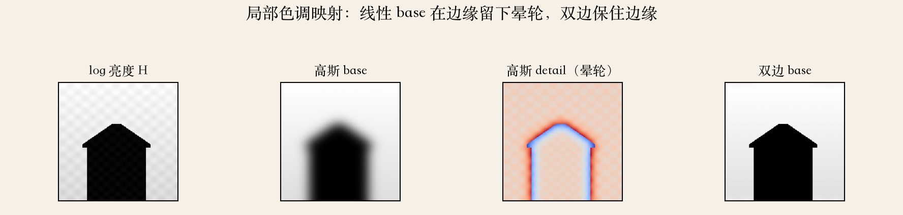
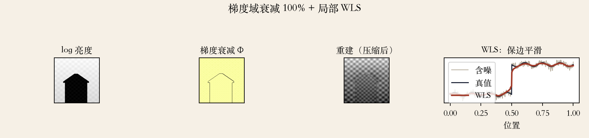

开场 · 色调映射
把大范围压回屏幕
- 辐亮度图要显示在 8 位屏幕上。
- 色调映射把大范围压回可显示范围。
- 压得太狠会发灰，压得太浅高光白掉。
- 同一张 HDR 可以映射出很多风格。
依据：原书第 627 页
要做的取舍
保哪些亮部
让哪些暗部
屏幕只有一个全局范围
HDR 格式
浮点才存得下高光
- 不差空间就用 32 位浮点 RGB。
- PPM 可扩成 PFM，TIFF 也支持浮点。
- Radiance 的 .hdr 用公共指数加尾数。
- OpenEXR 用 16 位浮点，JPEG XR 更新。
依据：原书第 627 页
格式决定上限
8 位 PNG/JPEG 存显示值
超过 1 的亮度要浮点
中间结果尽量保浮点
两类方法
全局曲线，还是局部算子
- 一类是空间变化的传递函数。
- 一类是压缩图像梯度再重建。
- 全局曲线是最简单的特例。
- 全局快而稳，局部保细节但更敏感。
依据：原书第 627 页
全局曲线
先压亮度，再带回颜色
- 全局传递曲线用 gamma 映回显示域。
- 逐通道 gamma 会让颜色变淡。
- 先映射亮度，再按比例带回颜色。
- 线性裁切窗外全白，亮度路线还有颜色。
依据：原书第 627 页；本集实验

线性裁切、逐通道、亮度路线：平均饱和 0.15 vs 0.28｜程序生成，未用教材或论文原图
base 与 detail
拆成亮度和纹理两层
- 图像拆成亮度和色度。
- log 亮度低通得到 base。
- 原 log 亮度减去 base 得到 detail。
- base 管大范围明暗，detail 管边缘纹理。
依据：原书第 628 页
为什么在 log 域
压暗变成减一个数
细节不会被一起压没
只压 base，不动 detail
局部曝光
按邻域亮度决定压多少
- 全局曲线在宽曝光范围仍保不住细节。
- 暗房 dodging/burning 按局部平均亮度调整。
- 数学上近似于除以邻域平均亮度。
- 邻域越大越平滑，越小越容易出光晕。
依据：原书第 627–628 页
压缩 base
压 base，留 detail
- base 压到目标 log 范围。
- 再和 detail 相加，指数回亮度。
- 式 10.14 下标印成 H_H。
- 同页正文和 Figure 10.19 图注说压的是 base。
依据：原书第 628 页
读法
下标印为 HH
按正文与图注读 base
压 detail 会削掉边缘
晕轮
线性低通会把边缘抹开
- 线性低通不是保边滤波。
- 高斯把亮暗边界抹开，base 在边缘变缓。
- detail 因此多出亮边和暗边。
- 晕轮在天空、窗户、树梢最明显。
依据：原书第 629 页；本集实验

高斯 detail 有晕轮，双边 base 保边｜程序生成，未用教材或论文原图
保边滤波
双边滤波：跨边缘不混
- 解决办法是用保边滤波器做 base。
- Durand 和 Dorsey 比较各向异性扩散，最后选双边。
- 双边在空间近、亮度也近的像素间平均。
- 代价是参数敏感、计算更贵。
依据：原书第 630 页
两个参数
σ_s 管看多远
σ_r 管差多少算同类
都要按图像内容调
梯度域
压梯度，再解泊松方程
- 不压 base，压它的导数。
- 先求 log 亮度梯度，压大梯度。
- 再解泊松方程把梯度积分回图像。
- 重建只差一个常数，亮度基准要另外定。
依据：原书第 630–631 页；本集实验

梯度域与泊松重建；WLS 保边平滑，噪声降约一半｜程序生成，未用教材或论文原图
WLS
把稀疏笔触插值成曝光图
- 用户画几笔曝光调整。
- WLS 把稀疏笔触插值成平滑曝光修正图。
- 平滑权重和 log 亮度梯度成反比。
- λ、α、ε 控制平滑和保边。
依据：原书第 633–634 页
WLS 的特点
平坦区更平滑
边缘处更敢跳
解稀疏线性系统
实验读数
趋势要横向比较
- 动态范围约 15608 倍，线性裁切丢高光 66.3%。
- 饱和 0.15 vs 0.28；晕轮 69.6% vs 7.4%。
- 双边保住阶跃 100%。
- 梯度能量降 99.6%，泊松重建误差 0.00%。
依据：本集实验
同一套实验
WLS 噪声标准差降约一半
合成图，无真实相机噪声
数字说明趋势，不是画质排名
工程选型
先看动态范围，再选算子
- 差两三档，全局曲线就够。
- 差很多档，再上局部算子。
- 局部映射先保边，再谈压多少。
- 颜色走亮度通道，别逐通道硬压。
依据：本集实验（工程选型）
输出前检查
base 压太狠会发灰
detail 放太大会有光晕
高光不全白，暗部不死黑
收束 · 下一集
色调映射，压进显示域
- 色调映射把辐亮度压进显示域。
- 全局曲线简单，但保不住大范围细节。
- 局部 base/detail 和梯度域能保细节，但怕晕轮。
- 保边滤波是局部算子的关键。
依据：原书第 627–634 页；移交 E095